S301 - Collecte Automatisée de Données Web
Développement d'un script d'extraction automatisé afin de centraliser et structurer massivement les données d'un catalogue produit, permettant l'analyse concurrentielle.
Voir le détail du projetCes travaux illustrent mon apprentissage progressif de la chaîne data, de la collecte brute à la restitution, face à des problématiques concrètes.
L'ensemble de mes travaux se trouve ci-dessous. Les livrables ne sont actuellement pas disponibles au téléchargement, car je suis en train de les modifier et de les nettoyer afin de les rendre parfaitement conformes à une diffusion publique.
20 projet(s) affiché(s)
Développement d'un script d'extraction automatisé afin de centraliser et structurer massivement les données d'un catalogue produit, permettant l'analyse concurrentielle.
Voir le détail du projet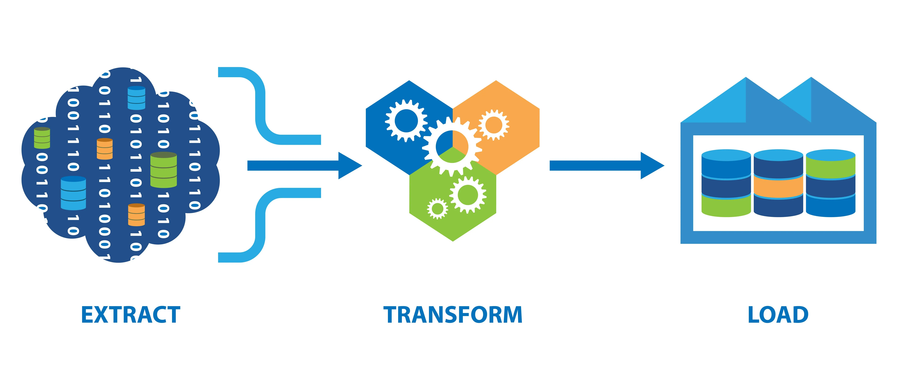
Construction d'une architecture relationnelle pérenne : extraction et transformation de données publiques (XML/XPath) via Apache HOP pour alimenter un Datawarehouse prêt à l'emploi.
Voir le détail du projet
Développement d'une interface Dash dynamique générant des quiz depuis un fichier YAML, avec correction automatisée des réponses par un LLM.
Voir le détail du projet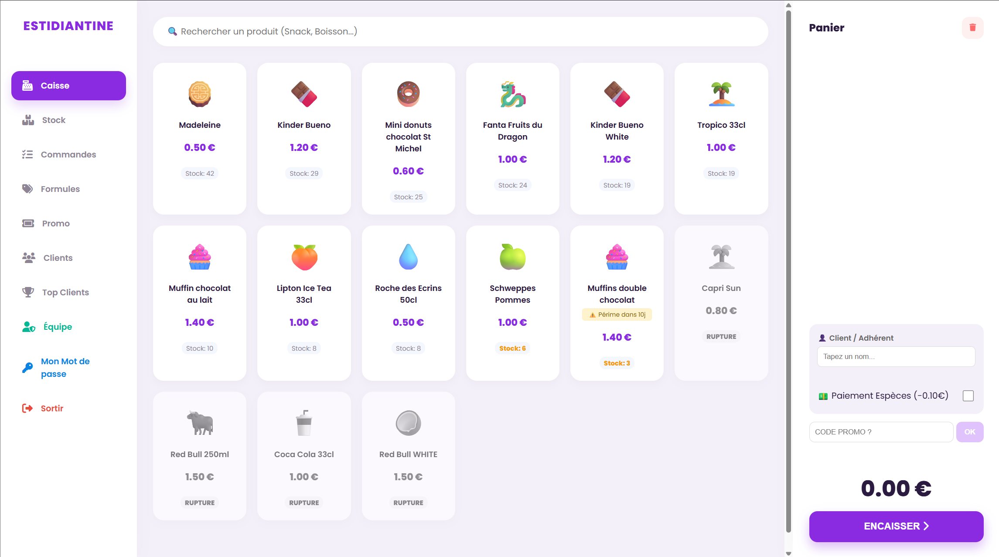
Création complète, de la base de données à l'interface, d'un point de vente connecté pour numériser la gestion financière du Bureau des Étudiants.
Voir le détail du projet
Conception d'une chaîne décisionnelle complète (scraping, nettoyage de doublons complexes et création d'un dashboard) pour piloter l'analyse économique locale d'un supermarché.
Voir le détail du projet
Cartographie et sécurisation des traitements de données sensibles (biométrie) pour une armurerie. Réalisation des registres CNIL pour garantir la licéité légale des processus.
Voir le détail du projet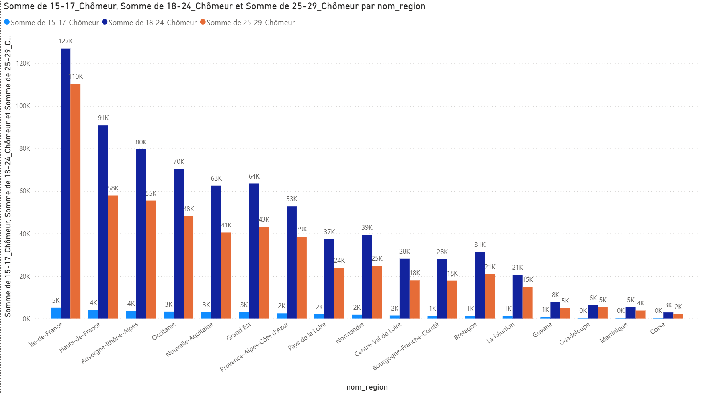
Production d'un dashboard Power BI sous forte pression (Hackathon 8h chrono) pour vulgariser des données massives de l'INSEE sur la scolarisation des jeunes.
Voir le détail du projet
Programmation de A à Z en VBA pour transformer un tableur Excel en véritable outil métier interactif (CRUD et gestion des conflits) pour une agence immobilière.
Voir le détail du projet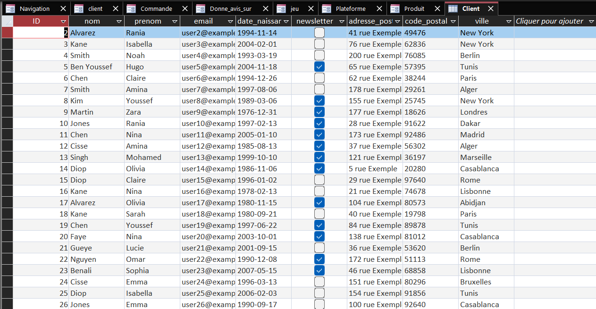
Conception de l'architecture backend complète (MCD/MLD) d'une boutique, suivie du développement d'une application métier fonctionnelle pour garantir l'intégrité des saisies.
Voir le détail du projet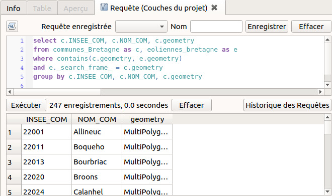
Manipulation d'une architecture de base de données via DuckDB : création de requêtes SQL complexes pour segmenter et filtrer les entreprises du Grand Est en vue d'un reporting.
Voir le détail du projet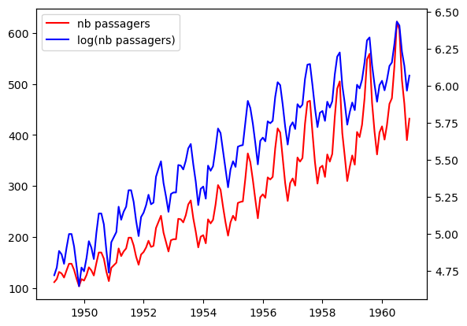
Modélisation de données chronologiques sous R afin d'identifier les tendances post-COVID du trafic aérien et produire des scénarios de prévisions exploitables pour les compagnies.
Voir le détail du projet
Automatisation du calcul de performance sportive (méthode ELO) sur des milliers de matchs historiques pour gagner un temps précieux en remplaçant la saisie manuelle.
Voir le détail du projet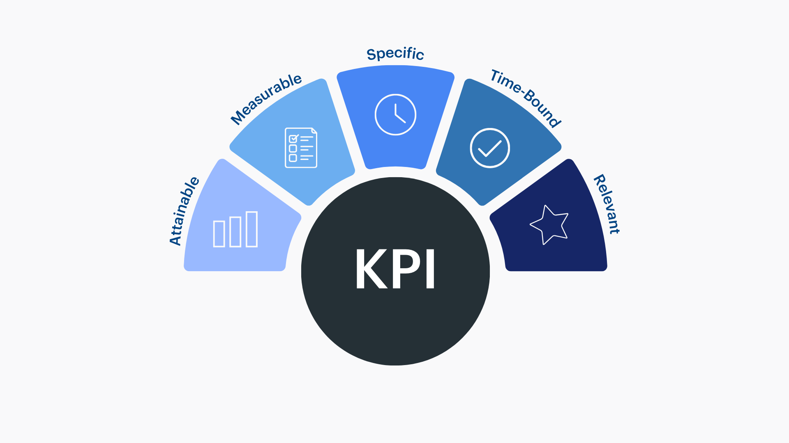
Création d'indicateurs de rentabilité (BNPA, plus-values) sur Excel pour émettre une note de recommandation d'investissement stratégique claire et justifiée.
Voir le détail du projet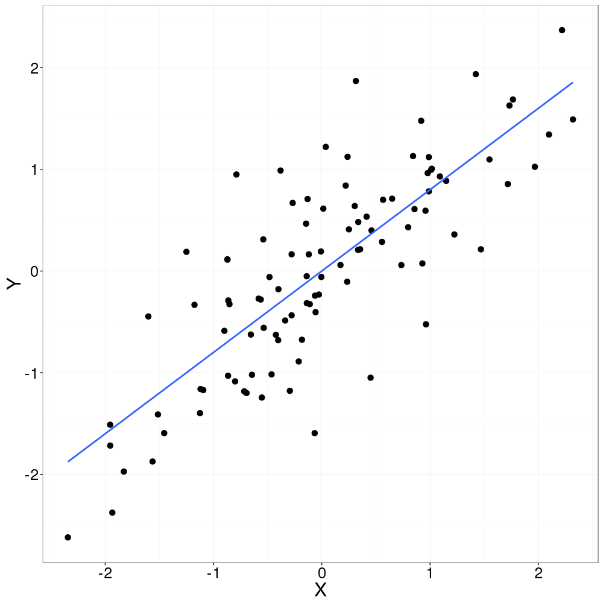
Ajustement d'un modèle de régression linéaire sous R afin de valider des hypothèses statistiques et comprendre l'impact des variables techniques sur les capacités automobiles.
Voir le détail du projet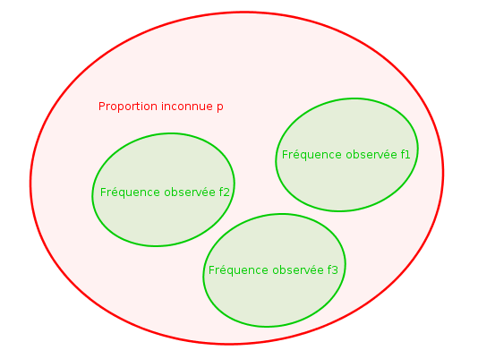
Construction d'intervalles de confiance et simulations probabilistes sous R pour évaluer avec précision les données globales de la CAF à partir d'échantillons représentatifs.
Voir le détail du projetCréation d'une enquête anti-biais, collecte sur le terrain, nettoyage des résultats et restitution infographique pour cartographier les usages réels de l'IA en milieu étudiant.
Voir le détail du projet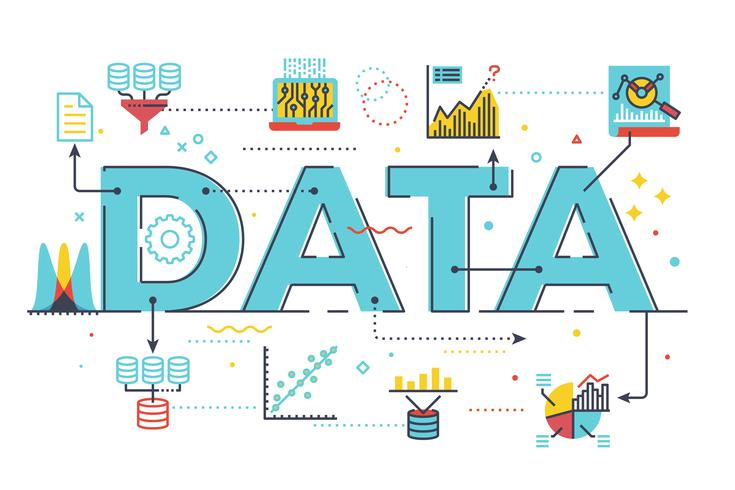
Traitement d'un jeu de données gouvernemental pour en extraire des KPIs sociaux pertinents, présentés lors d'un pitch technique entièrement en anglais.
Voir le détail du projet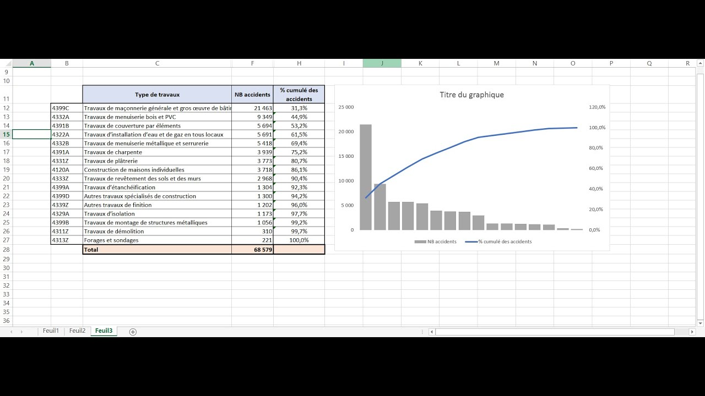
Exploitation de méthodes statistiques classiques (Loi de Pareto, Scoring RFM, Méthode ABC) pour identifier les leviers d'optimisation financière et logistique d'une entreprise.
Voir le détail du projet
Nettoyage profond d'un jeu de données brut et calcul d'indicateurs descriptifs pour mettre en évidence les corrélations majeures responsables de l'accidentologie routière.
Voir le détail du projet